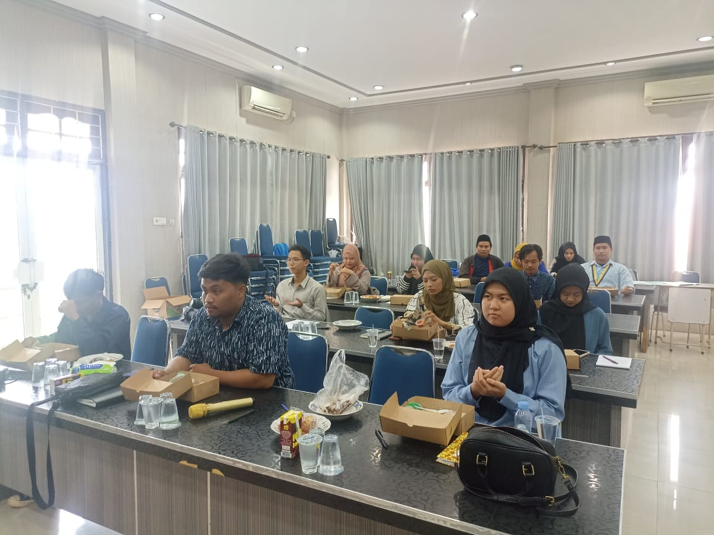

Komisariat UMKT Paser
Tahun Berdiri
2021
Kekuatan Kader
180+ Kader
Ketua Komisariat
Sahabat Dedy Wijaya
Motto / Tagline
"Saintifik, Inovatif, & Moderat Menyongsong Masa Depan."
info Tentang Kami
Komisariat termuda yang progresif, berfokus pada sains dan teknologi, serta inklusivitas pemikiran keislaman yang moderat. Kami berkomitmen menyebarkan pemikiran Islam pergerakan yang ramah dan solutif di lingkungan kampus.
Sejarah Singkat
Didirikan di kampus UMKT Tanah Grogot untuk memfasilitasi mahasiswa yang ingin memperdalam wacana keislaman Aswaja dengan nafas perjuangan dan kemahasiswaan PMII.
explore Visi & Misi
Visi Komisariat
"Menjadi pusat pergerakan mahasiswa yang progresif, ilmiah, dan berintegritas di lingkungan kampus UMKT Paser."
Misi Komisariat
- 1 Menyelenggarakan forum diskusi ilmiah, riset sosial kemasyarakatan, dan pengkajian isu terkini.
- 2 Memperkuat nilai-nilai toleransi, pluralisme, dan moderasi beragama di kalangan mahasiswa.
- 3 Mencetak kader yang menguasai teknologi dan sains untuk menjawab tantangan zaman baru.
insights Program Utama / Unggulan
Riset Kemasyarakatan
Penelitian lapangan mengenai isu-isu sosial dan lingkungan hidup di Paser.
Ngobrol Pintar (NGOPI)
Podcast dan sarasehan bulanan membahas sains, agama, dan humaniora.
Harmoni Inklusif
Forum dialog antar-organisasi untuk memupuk semangat kebersamaan dan moderasi.
Yuk, Gabung Bersama Kami!
Jadilah bagian dari gerakan perubahan intelektual dan keagamaan di kampus Universitas Muhammadiyah Kalimantan Timur (UMKT) Paser bersama PMII.
diversity_3 Badan Pengurus Harian (BPH)
Sahabat Dedy Wijaya
Ketua Komisariat
Sahabat Hendy Pratama
Wakil Ketua
Sahabat Farhan Maulana
Sekretaris
Sahabati Indah Lestari
Wakil Sekretaris
Sahabati Siti Rahma
Bendahara
Sahabati Nabilah
Wakil Bendahara
splitscreen Biro & Departemen
Biro Riset & Intelektual
Kepala Biro
Sahabat Surya Wijaya
Anggota
- Sahabat Wildan
- Sahabati Diana
Biro Kaderisasi
Kepala Biro
Sahabat Teguh Prasetyo
Anggota
- Sahabat Panji
- Sahabati Intan
Biro Humas & Jaringan
Kepala Biro
Sahabati Risma Fitria
Anggota
- Sahabat Satria
- Sahabati Vira
Biro Dokumentasi & Media
Kepala Biro
Sahabat Ricky Kurniawan
Anggota
- Sahabat Rafi
- Sahabati Nadia